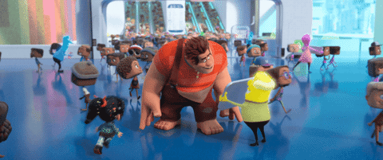

Wifi Ralph é uma continuação do filme "Detona Ralph"< onde Vanellope e Ralph exploram todos os
lados da nova ferramenta, a internet. Juntos eles descobrem que a internet pode ser tanto uma forte
aliada para a correria do dia a dia, quanto a maior das vilãs, contendo perigos e aventuras
inimagináveis.
O filme começa no que parece ser uma rede de computadores, onde todos os jogos do fliperama
estão conectados por um Hubs que permitem a interação dos personagens dos diversos jogos da rede.
A trama começa a se desenvolvr assim que o dono do fliperama conecta uma novidade com o
nome de "wi-fi', ou seja, a internet. Essa novidade despertou a curiosidade de todos, principalmente de
Ralph e de Vanellope.
Com intuito de recuperar o volante do jogo "A corrida doce" de Vanellope< Ralph e Vanellope
ingressam em uma aventura pela internet.
Assim que eles se conectam ao wi-fi, o dispositivo reconhece seus respectivos endereços IP e
começam a navegar em alta velocidade pela internet.
Logo após Vanellope e Ralph conseguem encontrar o resultado da pesquisa
do volante, uma voz, que me parece ser a voz da internet fala a seguinte frase "o
condutor que estiver à menos de 3 megabytes p/s será multado". Essa informação
não é verídica, pois, atualmente, a velocidade de rede é medida em bits e não em
bytes.
É importante freezar que o filme adapta as informações passadas de uma forma mais infantilizada,
como, por exemplo, a cena de vários tweets representados por pássaros, que faz referência clara ao
aplicativo Twitter.
Em uma tentativa desesperada de tentar recuperar a atenção de sua melhor amiga Vanellope,
Ralph tenta corromper o jogo que Vanellope fica apaixonada entrando na Deep Web, a parte mais
sombria, obscura e perigosa da internet.
Na Deep Web, Ralph tem acesso a um vírus denominado de Arthur. A função desse vírus é
encontrar e replicar falhas no sistema, deixando o jogo cheio de falhas, lentidão, problemas de
funcionamento e os conhecidos "bugs".
Até que o vírus consegue identificador uma falha no código do Ralph, o que ocasionou em inúmeras
duplicadas do Ralph que estavam atrás da Vanellope. Os clones sobrecarregaram toda a internet,
ocasionando em perda de dados e arquivos de alguns usuários, perda de sinal, entre outras
consequências.
O filme termina com o sumiço do vírus, o filme não explica de uma forma técnica como o problema
com o vírus foi resolvido, ele apenas explica que Ralph conseguiu consertar suas inseguranças.
Aluno: Bruno Vinicius Gonzaga Lopes